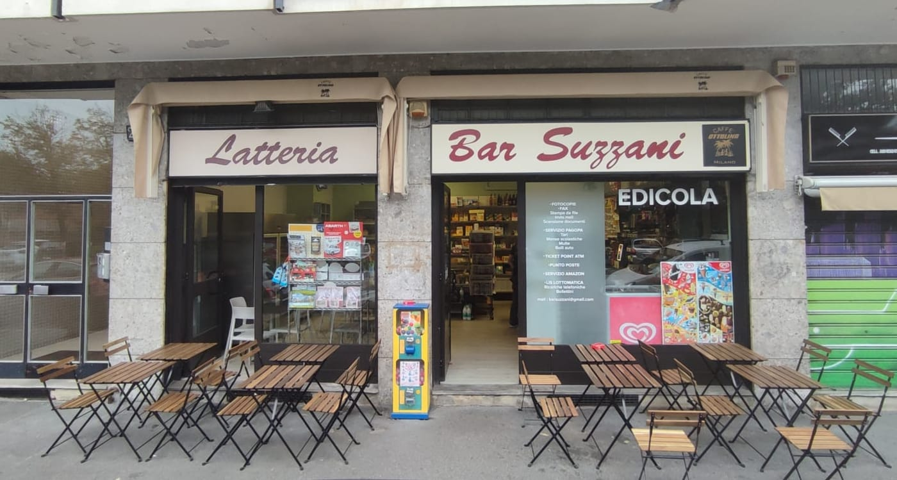

Edizione di oggi Viale Suzzani 270 · Milano, Niguarda Lun–sab dalle 6:45
Bar Suzzani
LatteriaBarEdicola
In fondo al viale, a due passi dal Parco Nord
Il bar in fondo al viale.
Il caffè alle 6:45, il giornale, l'etto di prosciutto, il bollettino da pagare e il pacco da ritirare: a Niguarda c'è un posto dove si fa tutto, ed è la latteria con l'edicola in fondo a Viale Suzzani. Mauro e Davide aprono presto, sei giorni su sette, e chi entra lo scrive da anni: qui ci si sente a casa.

- 194recensioni Google, 4,5 su 5
- 6:45l'ora in cui si apre, sei giorni su sette
- 16servizi allo sportello
Cronaca del banco
Pagina 2Salumi e formaggi al taglio, come in latteria.
L'insegna dice «Latteria», e il banco lo conferma: salumi e formaggi al taglio, latticini, frutta e verdura, la piccola gastronomia per la spesa al volo. Chi torna scrive di prodotti di prima scelta e di panini preparati al momento.
Si comincia con la colazione, brioche e cappuccino, anche di soia; a mezzogiorno il panino o la tavola fredda; nel pomeriggio il caffè, e verso sera una birra con le patatine ai tavolini fuori.
- Colazionebrioche e cappuccino dalle 6:45, anche di soia
- Il bancosalumi e formaggi al taglio, latticini, frutta e verdura, gastronomia
- Pranzopanini preparati al momento e tavola fredda, anche da asporto
- Aperitivouna birra e due stuzzichini, ai tavolini sul marciapiede
- A domiciliola spesa e i panini si possono chiedere a domicilio, telefonando
Edicola
Pagina 3Quotidiani e riviste, ogni mattina.
Dalle 6:45 i quotidiani sono sul banco, accanto alle brioche: si prendono col caffè e si leggono ai tavolini fuori, con il viale davanti.
Riviste, settimanali, i giornali che il quartiere legge. E fra un titolo e l'altro il bar fa quello che fa da sempre: si chiacchiera, ci si incontra, si torna il giorno dopo.
Piccoli annunci
Pagina 4Allo sportello si fa tutto.
Lo dice la vetrofania accanto alla porta: allo sportello del bar si fanno le cose che una volta si facevano in cinque posti diversi. Fotocopie e PagoPA, la ricarica dell'abbonamento e il pacco da ritirare, tutto con il caffè in mano.
- Fotocopie e faxfotocopie, fax, stampa da file, scansione documenti, invio mail
- PagoPATari, mense scolastiche, multe, bolli auto
- Bollettini e ricarichebollettini postali e ricariche telefoniche
- Ticket point ATMbiglietti e ricarica dell'abbonamento ATM
- Punto Posteil punto di ritiro e consegna delle Poste
- Servizio Amazoni pacchi si ritirano qui, anche IndaBox
- Lottomaticail punto LIS Lottomatica
Sedici voci, copiate dalla vetrina. Per sapere se un servizio è disponibile oggi, una telefonata: 02 643 5470.
Lettere al bar
Pagina 5Quello che scrivono.
4,5su 194 recensioni Google
- 46lettere parlano di gentilezza, simpatia e accoglienza
- 20parlano di Mauro e Davide, dei ragazzi al banco
- 17dei prodotti e della qualità
- 15del caffè
- 13dei salumi e dei formaggi
- 13del quartiere, della Bicocca, del Parco Nord
- 9dei giornali e dell'edicola
Contate una per una nelle 133 recensioni Google che hanno un testo. Il titolare risponde a 93 recensioni su 194.
«Il mio bar del sabato mattina»
Da una recensione Google
Il tempo e gli orari
Pagina 6Dalle 6:45, sei giorni su sette.
In fondo a Viale Suzzani, a due passi dall'ingresso del Parco Nord e dalla fermata Bignami della metro lilla; ci passa il bus 42. L'Ospedale CTO è dall'altra parte di Viale Fulvio Testi.
Bar SuzzaniViale Giovanni Suzzani 270
20162 Milano
02 643 5470
- Domenica chiuso.
- Sabato si chiude alle 19.
- Le ore più piene, secondo Google: metà mattina e le 16–17.
- Tavolini sul marciapiede.
| Lunedì | 06:45–19:30 |
|---|---|
| Martedì | 06:45–19:30 |
| Mercoledì | 06:45–19:30 |
| Giovedì | 06:45–19:30 |
| Venerdì | 06:45–19:30 |
| Sabato | 06:45–19:00 |
| Domenica | chiuso |
Domande
Ultima paginaA che ora aprite?
Alle 6:45 dal lunedì al sabato. Chiudiamo alle 19:30, il sabato alle 19. Domenica chiuso.
Si può mangiare?
Sì: colazione con brioche e cappuccino, a pranzo panini preparati al momento e tavola fredda, e il banco di salumi e formaggi per la spesa.
Vendete i giornali?
Sì, quotidiani e riviste ogni mattina: l'edicola è dentro il bar.
Si pagano bollettini e PagoPA?
Sì: bollettini, PagoPA (Tari, mense scolastiche, multe, bolli auto), ricariche telefoniche e dell'abbonamento ATM.
Posso ritirare un pacco?
Sì: siamo punto di ritiro Amazon, IndaBox e Punto Poste.
Consegnate a domicilio?
Sì, telefonando: la spesa del banco e i panini possono arrivare a casa.